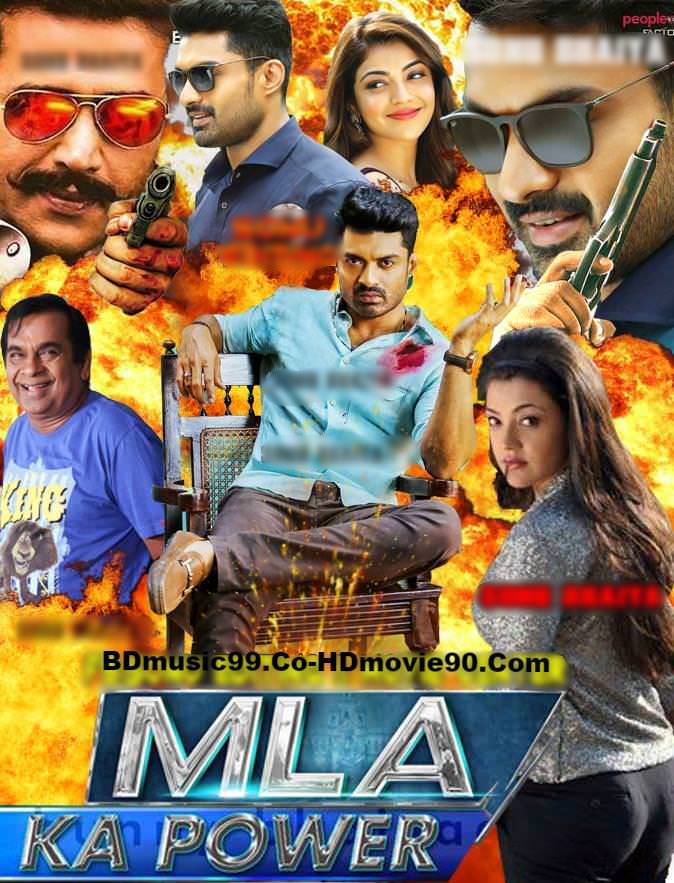
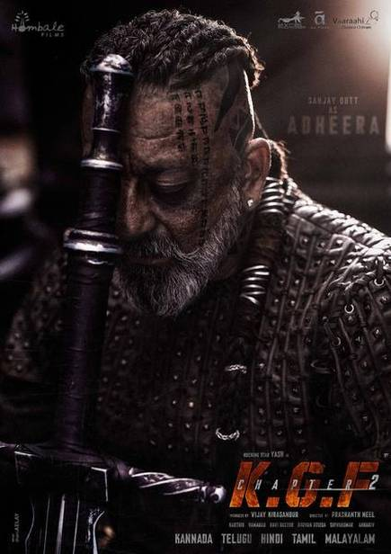

Surya
Surya
Rating :-
6.8/10 IMDbSurya Story:-
Surya (Allu Arjun), a soldier, has his moment of reckoning well into the later portions of the movie. An elderly man is grieving a personal loss and a young cop investigating the incident calls Surya because he is the only possible witness. We know it even before the camera zooms in on Surya that he knows the truth.Surya Review:-
This is a film which is spoiled by the director itself by worst screenplay. The concept is really good, but unnecessary songs like lover also, iraga iraga & adding heavy commercial values and dull climax killed the film. Only thing which is good in this film is Allu Arjun's brilliant portrayal of Surya an angry soldier. He made the movie bearable.Story plotting superb.. scenes and dialogues are very powerful..allu arjun acting ek number bhai......Reality movie.. how minorities facing problems in this new india. they are not even getting recognized in their own country although they fought and they didn't left .... very good messages in this movie as well as life of a soldier ( who's dream is to protect country on border) and Minority status.. literally i got very emotional.. this is my country.. i felt very proud to be an indian.. thank you director sahab for giving such wonderful film to industry

Bahubali
Bahubali
Rating :-
8.0/10 IMDbBahubali Story:-
Sivudu (Prabhas) is consumed by a desire to scale the waterfall by the edge of his hamlet right from his childhood, much to the chagrin of his doting mother. One fine day, he ascends the summit only to find out that it he is the son of Amarendra Bahubali, the crown prince of the kingdom of Mahishmati, who gets murdered by his first cousin, Bhalladeva (Rana).Bahubali Review:-
To cut a long story short, this “magnum opus” is a CGI laden attempt to blend the good old folk lore format into a kitschy hero-worshipping Tollywood potboiler. A romantic sequence in which Sivudu woos Avanthika (Tamannaah) emphatically proves why. A brief background about Avanthika first: a feared warrior from the fiefdom of Kuntala, she’s dedicated her life to the cause of rescuing Devasena (Anushka), the wife of Amarendra Bahubali and mother of Sivudu, from the clutches of the vicious Bhallaladeva, the backbiting first cousin of Bahubali who usurps the throne. Cut to the scene. “Nuvvu oka aada pillavi. Nenu oka mogadini. Nenu aa neeti konda ni ekki vachcha nini premisthuna ani cheppadaniki," (You are a girl, I'm a man, who has climbed up this mountain, to say I love you), quips Prabhas, even as Avanthika has her sword pointed at his heart. For the next couple of minutes, a fight ensues during the course of which he skillfully disrobes her right down to her (very fashionable) red inner wear, and leaves a splattering of his blood on her forehead. seeing her own reflection in a sheath of water cascading from a cliff, Tamannah realises that he is her man and jumps to embrace him. Then they make love over a song.
Mahaabali
Mahabali
Rating :-
6.2/10 IMDbMahabali Story:-
Mahabali is a Hindi movie released on 1 Dec, 2007. The movie is directed by Surya Prakash K. V. and featured R. Sarathkumar, Kiran Rathod, Vadivelu and Jayaprakash Radhakrishnan as lead characters. Other popular actor who was roped in for Mahabali is Anandaraj.Mahabali review :-
Mahabali is a Hindi movie released on 1 Dec, 2007. The movie is directed by Surya Prakash K. V. and featured R. Sarathkumar, Kiran Rathod, Vadivelu and Jayaprakash Radhakrishnan as lead characters. Other popular actor who was roped in for Mahabali is Anandaraj.A tale of emotions and relationships, 'Mahabali', is the story of good-hearted Rajinder who believes in helping people in whatever way he can. He wants to marry Geeta but is humiliated for being poor. To prove his love he vows to become a multi-millionaire in a year. But his call of duty towards a stranger, Aishwarya makes him ignore Geeta. He promises Aishwarya to make her meet her love, Raj. An interesting social drama where goodness triumphs over the evil.
Rajendar is an orphan who works as a cook. He wants to marry Geetha and expresses his desire to her affluent father. Instead Rajendar gets insulted by him for being a cook. He challenges her father that he will be rich in a year and will marry Geetha. Destiny takes him on a crooked path, where he meets Aishwarya and comes to a place where everyone refers to him as Dara Singh. But who is Dara Singh and what does it have to do with Rajendar's past?

kavacham
Kavacham
Rating :-
5.5/10 IMDbKavacham Story:-
A police officer from Vizag finds himself in a rut when false allegations are levied against him. He has 24 hours now to prove his innocence. Will he be able to get back the respectable life he once had?kavacham review :-
Kavacham is labelled a high voltage action thriller and is one indeed. The director though takes the 'voltage' side of this genre more seriously than the other aspects. It's a movie-watching experience that you'll remember for its high-decibel levels, gravity-defying action sequences amid a needlessly thumping background score. Even if the story seems intriguing on a certain level, the filmmaker Sreenivas Mamilla seems more interested in making the hero wear smart tees, romance the ladies in scenic locations and have him thrash the goons to a pulp sequence after sequence. The film is told through the eyes of an outright.The actioner is set amid a Visakhapatnam backdrop and Vijay, the cop is raised by his mom. A 60s styled mom-son thread commences the proceedings and what follows is a series of customary fight sequences to establish the cop's sincerity. And Bellamkonda too isn't an actor known for his subtleties, so you're rather okay with it.

A special mention should go to Brahmanandam's short but hilarious appearance that had me laughing uncontrollably.I felt the music too was quite fresh. It was breezy, melodious and urbane in flavor. The visuals are gorgeous and colors are rich. What starts as a fun entertainer morphs into an inspiring one as the film progresses. And yes, there's plenty of action throughout the duration. The action sequences are brilliantly choreographed and placed accordingly. Plus, there is ample emotion and humor, perfectly balanced to produce a desirable impact.
MLA ka power
MLA ka power
Rating :-
5.2/10 IMDbMLA ka power Story:-
An intelligent youngster is faced with a situation to win in the state legislative assembly elections in order to win the approval of his father-in-law.MLA ka power review :-
If you think MLA is going to be just a fun action entertainer as it seems from the promos, you're right! The film has all the ingredients for a perfect popcorn entertainer. Kalyan Ram, without a second thought, doesn't just look great in this new look but also performs very well. Same for Kajal Aggarwal and Ravi Kishan.A special mention should go to Brahmanandam's short but hilarious appearance that had me laughing uncontrollably.I felt the music too was quite fresh. It was breezy, melodious and urbane in flavor. The visuals are gorgeous and colors are rich. What starts as a fun entertainer morphs into an inspiring one as the film progresses. And yes, there's plenty of action throughout the duration. The action sequences are brilliantly choreographed and placed accordingly. Plus, there is ample emotion and humor, perfectly balanced to produce a desirable impact.

The impressively-mounted sets make up for Prashanth Neel's flimsy storyline. Composer Ravi Basrur lifts up the scenes with his terrific background orchestra.
The visuals are consistently stunning. For instance, the bloody and raw climax takes your breath away.
K.G.F
K.G.F
Rating :-
8.3/10 IMDbK.G.F Story:-
The story of the most ambitious man in India. A person who wanted to control the Kolar Gold Fields, the richest gold mining reserve in India during the 70s and 80s when the price of gold was at its highest.K.G.F review :-
Rocky is an ambitious boy, who wants to die as the richest and most powerful man. From the streets of Bombay to the fields of KGF, he embarks on the mission. And his tale is retold by a journalist who chronicled his life in the 1980s.The impressively-mounted sets make up for Prashanth Neel's flimsy storyline. Composer Ravi Basrur lifts up the scenes with his terrific background orchestra.
The visuals are consistently stunning. For instance, the bloody and raw climax takes your breath away.